NHIS AX 실전
우리 팀에 AI 인턴 들이는 법
AX란 무엇인가
공단 업무와 AI의 만남
강사 소개 — 송태영
전자공학에서 출발해 통신 네트워크 표준과 AI 연구를 거쳐, 지금은 LG전자에서 사내 업무의 AX를 3년째 맡고 있습니다.
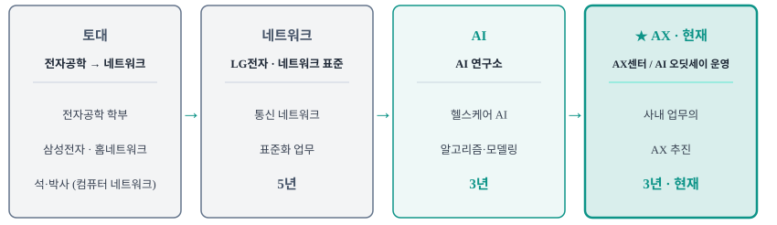
AI의 발전 — 룰기반에서 에이전틱 AI까지
60여 년에 걸친 AI의 발전을 다섯 단계로 압축하면 — 사람이 규칙을 직접 넣던 시대에서, AI가 스스로 일을 수행하는 에이전틱 AI 단계까지 왔습니다.
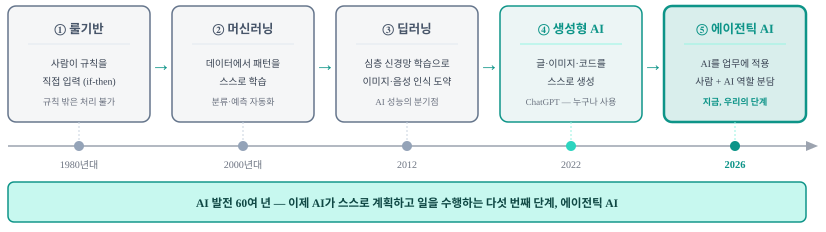
AX 4단계 — 내 업무는 어디인가
우리가 왜 지금 AX를 배워야 하는지, AX가 도대체 무엇인지부터 시작합니다.
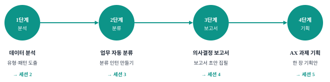
DX와 AX 무엇이 다른가
종이를 디지털로 옮긴 게 DX, 디지털 위에 AI를 얹어 사람의 반복 작업을 인턴이 대신하게 하는 게 AX.
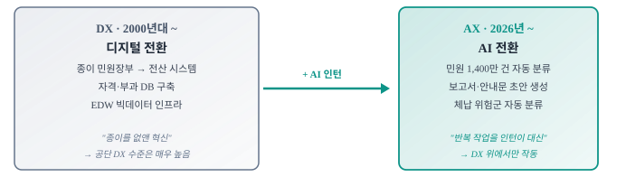
왜 지금 AX인가 — 세 축
제도(AI 기본법 1.22) · 정책(AX 전담체계 3.6) · 실행(공공 AI 사업지원센터 3.2) — 40여 일 사이에 모두 갖춰졌습니다.
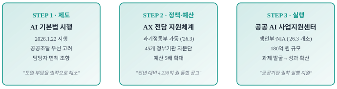
AI 기본법 4개 조항 — 공단 의미
「AI 기본법」(2026.1.22 시행) 중 공공기관 실무에 직접 영향을 주는 4개 조항. 가운데 ★ 칸이 도입 결정의 게임체인저.
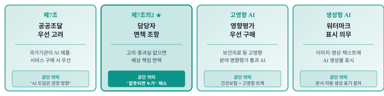
사례 1. 국민신문고 — 1,400만 건의 민원에 AI
국민권익위 국민신문고가 2026.2.5부터 생성형 AI 시스템을 본격 가동했습니다.
사례 1 보강 — 답변 보조와 다국어 자동 번역
AI 봇이 민원 요청을 알려주고 답변 작성을 도와주며, 다국어 민원도 자동 감지·번역해 처리합니다.

사례 2. 경기GPT — 지방정부 최초 자체 AI 플랫폼
경기도가 131억 원 규모로 도입한 행정 AI 플랫폼, 핵심 키워드는 "소버린 AI"입니다.

사례 3. 범정부 AI 행정망
행안부·과기정통부가 90억 원에 발주한 범정부 공통 인프라 — "행정망에서도 AI를 쓸 수 있게" 만들었습니다.

사례 4. 산업부 해외인증 AI 에이전트
디지털플랫폼정부위·과기정통부 5대 실증과제 중 하나, LLM+RAG 기반 AI 에이전트입니다.

사례 5. NHIS 민원 AX — 우리 공단의 사례
디플정위 「공공AI 실증 사례집」에 등재된 110개 사례 중 하나가 우리 공단입니다.

사례 5 보강 — 공단은 이미 자체 AI 2종 가동 중
사례집 등재만이 아니라, 2026.4부터 공단은 자체 AI 서비스 2종을 실제로 운영하고 있습니다.
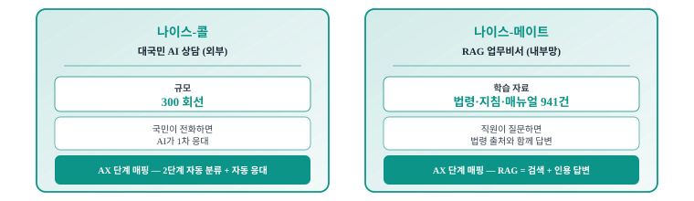
사례 5 출처 — 디플정위 「공공AI 가이드라인 2.0」
2025.4 디지털플랫폼정부위원회가 발간, 부록 110개 사례집에 공단(에이전틱 AI 민원상담)·국세청(통화 성공률 24%→98%, 비용 80억→4억)·국민권익위·NIA·한국지역정보개발원이 등재.

5개 기관 핵심 수치 — 사례집의 실체
가이드라인 2.0 부록 110개 중 공단을 포함한 5개 기관의 핵심 KPI. 국세청 80억→4억은 운영비용, NHIS 39%→90%는 처리 범위입니다.
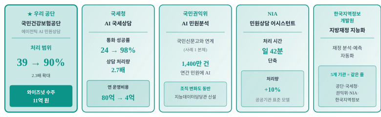
5사례 한눈에 — 1년 사이의 시간표
2025.4 디플정위 사례집부터 2026.3 행정망 AI 확대까지, 1년 안에 일어난 다섯 변화를 한 줄에.
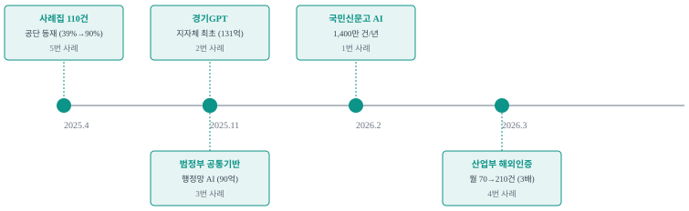
세션별 로드맵 — 단계·데이터·산출물
세션 2·3·4·5가 AX 4단계와 1:1 대응되고, 앞 세션 산출물이 뒤 세션 입력으로 이어 붙는 "체인" 구조입니다.
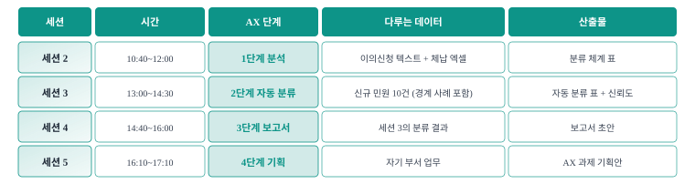
단계별 AI vs 사람 역할 분담
각 단계 윗단은 AI(반복 처리), 아랫단은 사람(판단·검수). HITL(Human-in-the-Loop, 사람 검수 게이트)은 추상적 구호가 아니라 단계별 구체적 검토 행위입니다.
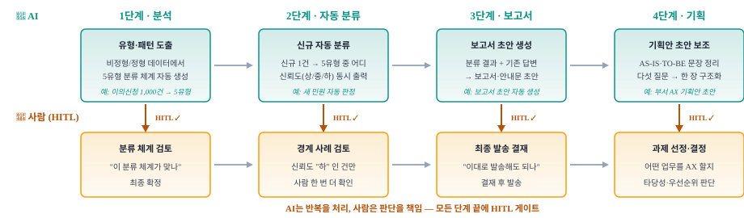
비정형도 정형도 같은 4단계
이의신청(비정형 텍스트)과 체납이력(정형 엑셀) — AI는 둘 다 동일한 4단계로 처리합니다.
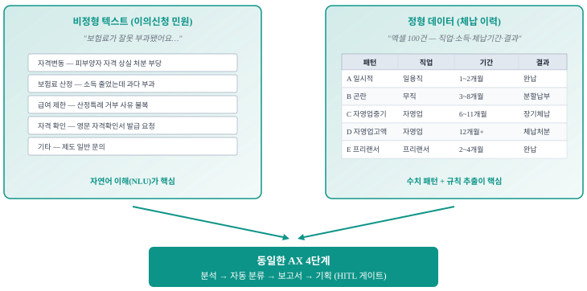
Gemini
도구는 하나, 활용 방식만 달라집니다. 세션 2·4는 일회성 채팅, 세션 3은 Gem 활성 채팅, 세션 5는 같은 화면에서 자기 부서 기획으로 이어집니다.
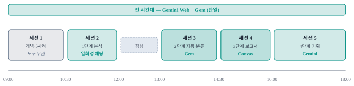
Gemini 첫 화면
좌측 Gems 목록, 가운데 채팅 입력창, 하단 도구 메뉴. 세션 2는 이 메인 화면의 일회성 채팅부터 시작합니다.
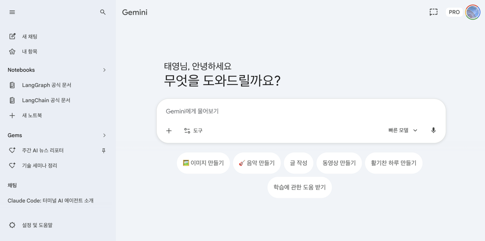
RAG 작동 원리
Retrieval-Augmented Generation — 외부 문서를 검색해 답에 합치는 패턴.
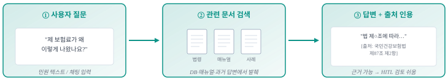
에이전틱 AI — ReAct 패턴
생각(Reason) → 도구 호출(Act) → 관찰(Observe) — 이 사이클을 반복하는 AI를 "에이전틱"이라 부릅니다.
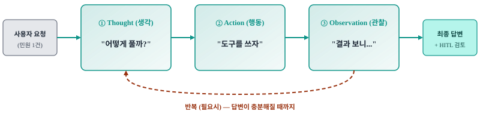
§1 정리 — 자주 하는 5대 오해
직장인이 AX를 처음 만날 때 자주 빠지는 5가지 오해. 미리 짚지 않으면 오후 실습에서 헛바퀴를 돕니다.
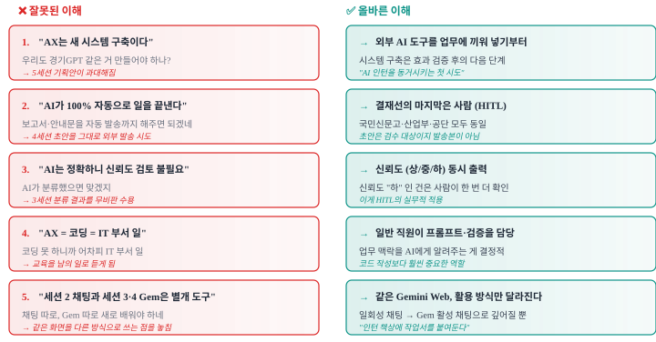
데이터에서 패턴 찾기
Gemini로 AX 1단계 직접 해보기
AX 1단계 - 분석을 자기 손으로
엑셀 100건짜리 데이터를 AI에게 던지고, 패턴을 찾아오게 하는 시간입니다.
검색이 아니라 프롬프트다
가장 자주 보는 오해부터 — AI에게 말 거는 것은 구글 검색과 다릅니다.
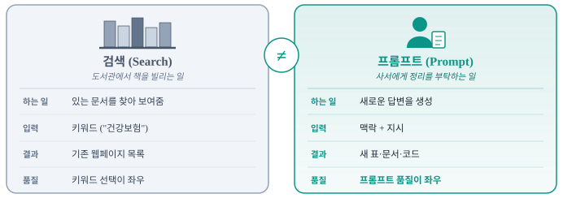
프롬프트 3요소 — 매번 반복되는 기본기
비개발자가 외울 단어는 단 셋 — 맥락(누구) · 지시(뭘) · 형식(어떤 모양으로).
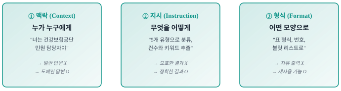
Gemini 모델 선택
입력창 우하단 드롭다운에서 빠른 모델 / 사고 모델 / Pro 중 고릅니다.
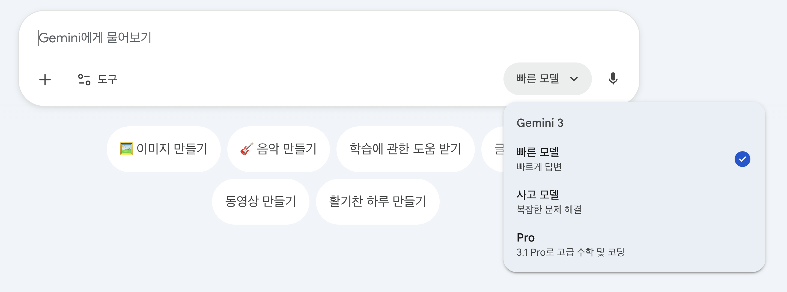
Gemini `+` 메뉴 — 첨부 경로
입력창 좌하단 + 에 파일·Drive·포토·코드·NotebookLM 5개 경로가 있습니다.
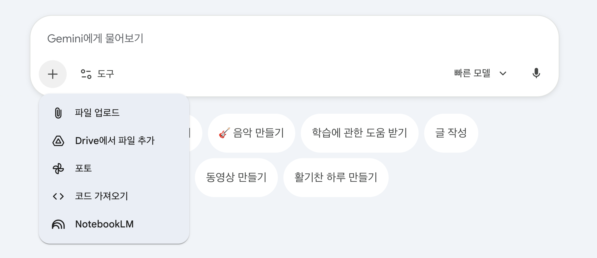
Gemini 도구 메뉴
도구 호출은 클릭 한 번 — Canvas, Image, Video 등이 같은 메뉴 안에 있습니다.
AI 응답의 비결정론
같은 프롬프트라도 같은 답이 나오지 않는다 — 결함이 아니라 기본 성질입니다.
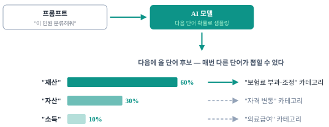
반복 개선 사이클
한 번에 완벽한 프롬프트는 없습니다 — 한 줄씩 추가하며 다듬는 게 진짜 실력.
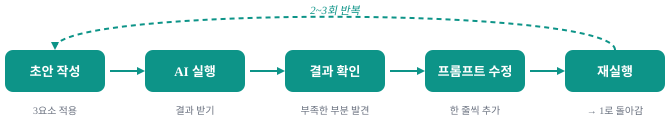
시연 1 — 민원 텍스트 20건 (3단계)
자유 탐색 → 기준 도출 → 규칙화 — 이의신청·자격문의·증명서 발급 등 혼합 민원 20건의 표준 흐름입니다.
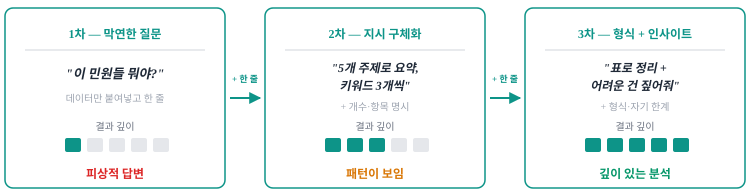
시연 1 — 단계별 프롬프트
앞 장 3단계 흐름을 그대로 — 외울 필요 없이, 같은 채팅창에서 지우지 말고 한 줄씩 더하세요.
[1차 — 자유 탐색] 일부러 막연하게, 민원 파일을 첨부하고
이 민원들 뭐야?
[2차 — 지시 구체화] 앞 프롬프트는 그대로, 개수·항목만 한 줄 추가
이 민원 20건의 주요 주제를 5개로 요약해줘.
각 주제별 키워드 3개와 해당 민원 번호를 알려줘.
[3차 — 형식 + 인사이트] 표 형식과 어려운 케이스를 한 줄 더
표 형식으로 정리해줘. 그리고 20건 중 가장 분류하기
어려운 민원 2건을 골라서 이유를 설명해줘.
시연 2 — 체납 100건 엑셀 분석
같은 원리, 입력만 다릅니다 — 체납 엑셀 파일을 Gemini 입력창에 첨부.
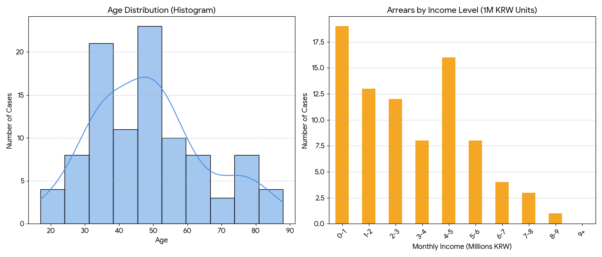
시연 2 — 단계별 프롬프트
체납 엑셀 파일을 입력창에 첨부. 그다음은 시연 1과 똑같이 한 줄씩.
[1차 — 텍스트 EDA] 엑셀 파일을 첨부하고 막연하게
이 데이터를 설명해줘.
[2차 — 정량 요약] 평균·중앙값을 표로 못 박아
연령·소득·체납기간의 분포를 요약해줘. 평균·중앙값·최빈값을 표로.
[3차 — 시각화] 차트 코드는 AI가 자동 작성·실행
연령 분포를 히스토그램으로, 소득대별 체납 건수를 바차트로 그려줘.
[4차 — 인사이트] 분포에서 그룹·패턴을 끌어내기
이 차트들을 보면 어떤 체납자 그룹이 보이는가? 패턴 3~4개로 정리해줘.
시연 1·2 한 장으로 — 같은 4단계
텍스트(이의신청)도 엑셀(체납)도 동일한 사이클: 막연한 질문 → 구체적 지시 → 형식·시각화 → 인사이트.
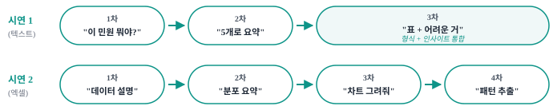
체납 4유형 — Gemini 정확도 5/10
명확한 4유형 정의를 줘도 경계 케이스에서 절반이 틀린다 — AI 분류는 1차 안일 뿐, 사람 검수(HITL)가 필요한 이유.
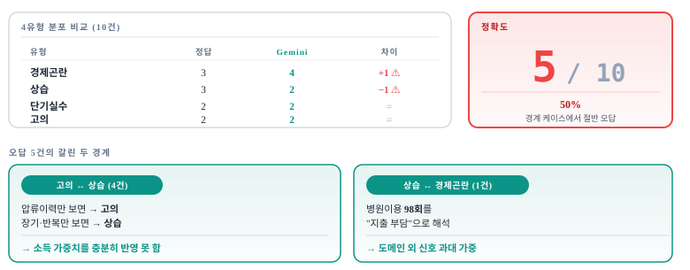
표준 분류 — 민원 5유형 + 체납 4유형
AI가 처음 잡는 분류는 매번 흔들립니다. 100명이 같은 언어로 일하려면 사람이 한 번 못 박은 표준이 필요합니다 — 이 두 표준이 §3·§4 입력값입니다.
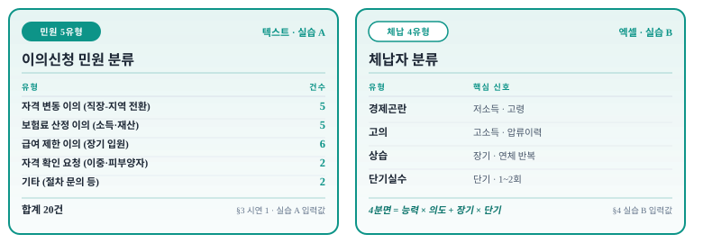
실습 A·B — 직접 1사이클 돌려보기
시연을 본 그대로, 17분 + 7분 동안 자기 손으로. 황금률은 단 하나 — "지우지 말고 한 줄만 더하세요".
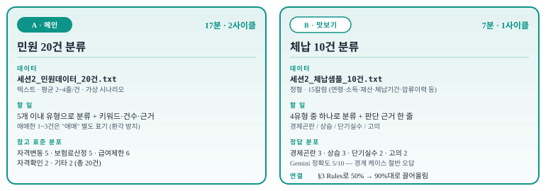
실습 A — 시작 프롬프트 (민원 20건)
메인 실습 — 시연 1을 본 그대로. 민원 20건 파일을 첨부하고 아래를 입력하면 1사이클 시작.
너는 건강보험공단 민원 분석 담당자야.
첨부한 이의신청 민원 20건 파일을 분석해서:
1. 주요 민원 유형을 5개 이내로 분류
2. 각 유형별 키워드 3~5개 + 유형별 건수와 대표 민원 번호
결과는 표로 — | 유형명 | 건수 | 키워드 | 대표 사례 |
애매한 민원은 "애매" 유형으로 별도 표기.
실습 B — 시작 프롬프트 (체납 10건)
맛보기 실습 — 같은 3축이 정형 데이터에도 통하는지 1사이클로 확인.
너는 건강보험공단 체납 담당자야.
첨부한 체납 이력 10건 파일을 4유형 중 하나로 분류해줘.
경제곤란(저소득·결손) · 상습(장기·반복) · 단기실수(단기·1~2회) · 고의(고소득+압류이력)
결과는 표로 — | 번호 | 유형 | 판단 근거 | + 표 아래 4유형별 건수 합계.
자주 하는 실수 5가지 한눈에
1차 결과를 받기 전에 한 번, 받고 멈추기 전에 한 번 더 보세요.
| # | 증상 | 해결 |
|---|---|---|
| 1 | 맥락·형식 없이 지시만 — "민원 분류해줘" | 역할 + 개수 + 표 형식 한 줄씩 추가 |
| 2 | "정리해줘" 같은 모호한 동사 | "5개 유형으로 분류" / "평균·중앙값을 표로" |
| 3 | 데이터 붙여넣기 누락 → 환각 | 실제 데이터 + "20건 외에는 만들지 말 것" |
| 4 | 1차 결과에서 멈추기 | "판단 근거", "어려운 케이스 2건" 한 줄 추가 |
| 5 | 프롬프트 통째로 다시 쓰기 | 지우지 말고 한 줄만 더하기 (황금률) |
분류 vs 탐색 — 순서가 중요하다
비개발자가 자주 빠지는 함정 — 분류 체계가 없는데 분류부터 시키는 것. "분류는 분석의 결과지, 시작이 아니다."
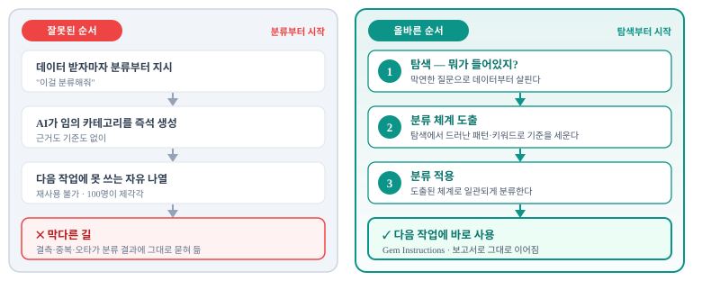
§2 정리 — 데이터에서 패턴 찾기
80분 동안 손에 익힌 핵심 3가지를 한눈에.
| 가져갈 것 | 한 줄 정리 |
|---|---|
| 프롬프트 3요소 | 맥락(누구) + 지시(뭘) + 형식(어떤 모양으로) — 이 셋이면 70% 완성 |
| 반복 개선 사이클 | 한 번에 완벽한 프롬프트는 없다 — 한 줄씩 더해 2~3회 |
| 5유형 표준 분류 | 자격 변동 이의·보험료 산정 이의·급여 제한 이의·자격 확인 요청·기타 — 사람이 한 번 못 박은 기준 |
AI로 업무 자동 분류
Gemini Gem으로 만드는 분류 인턴
AX 2단계 - 자동 분류 인턴 만들기
AX 2단계 · 업무 자동 분류 — 오전 §2에서 끌어낸 5유형 기준을, 오후엔 Gemini의 Gem 매뉴얼로 옮겨 담습니다.
민원_분류_도우미 Gem 하나를 직접 만들어, 데이터만 첨부하면 5유형으로 분류해 오는 인턴을 보유한 상태가 됩니다.왜 일회성 채팅에서 Gem으로
§2의 잘 된 프롬프트는 채팅 기록에 묻힙니다. 같은 일을 두 번 이상 한다면 답은 거의 항상 Gem입니다.
| 한계 | 증상 | Gem이 푸는 법 |
|---|---|---|
| 휘발성 | 잘 된 프롬프트가 채팅 기록에 묻힘 | Instructions에 저장 → 새 채팅에서 선택만 |
| 공유 불가 | 동료에게 캡처·설명으로 전달 | Gem URL 한 번 공유 |
| 개선 손실 | 다듬은 프롬프트가 단발 채팅에만 남음 | Instructions·Knowledge에 누적 → 자산화 |
| 검수 게이트 부재 | AI 결과를 그대로 받고 끝 | 참고 정답 대조 → 경계 사례를 Instructions에 누적 |
Gem 편집 화면 — 매뉴얼을 적는 곳
좌측 Gem 메뉴에서 "새 Gem"을 누르면 열리는 화면입니다. §2의 채팅창에 이 편집 화면 하나가 더해질 뿐 — 새로 깔 것도, 외울 단축키도 없습니다.
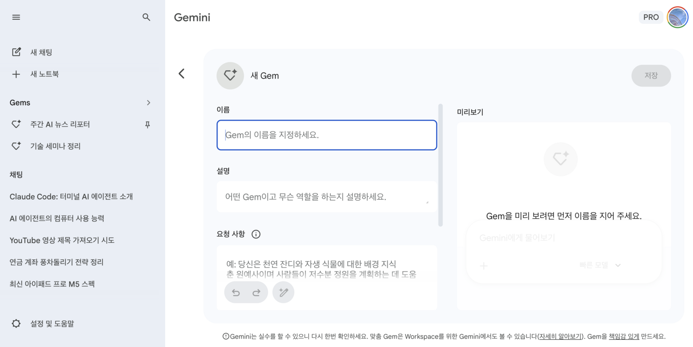
Gemini·Gem 3요소 — 분류 인턴의 뼈대
"Gem 활성 채팅"은 추상 개념이 아니라 세 가지가 한 화면에 모인 상태입니다.
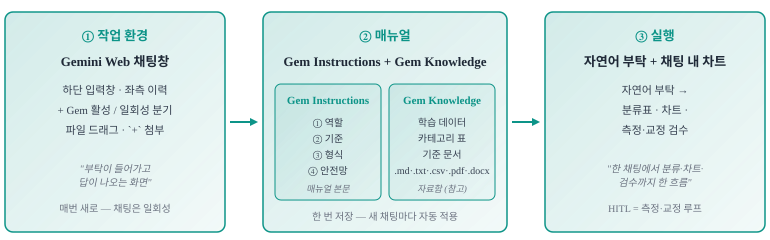
Few-shot — 예시를 보여주면 정확해진다
프롬프트 엔지니어링 기본기 하나 — 지시만 할지, 정답 예시를 몇 건 같이 보여줄지.
| 구분 | Zero-shot | Few-shot |
|---|---|---|
| 방식 | 지시만 — "5유형으로 분류해줘" | 지시 + 정답 예시 몇 건 함께 |
| 애매한 케이스 | AI가 임의 판단 → 흔들림 | 예시가 판단 기준을 못 박음 |
| §3 적용 | — | 경계 사례를 예시로 Instructions에 박기 |
분류 인턴을 다듬는 3원칙
시연·실습에서 Gem Instructions에 반복해 채워 넣을 세 가지입니다.
| 원칙 | 한 줄 | 어디서 |
|---|---|---|
| 분류 기준 명시 | 5유형이면 5유형 전부를 Instructions 본문에 (반쪽 금지) | 시연 1B |
| 예시 — 경계 사례 우선 | 헷갈리는 1~2건이 평범한 5건보다 강력 | 시연 1C |
| 애매 처리 규칙 | 확신 없으면 신뢰도 '중/하'로 표시하고 이유를 적게 한다 | 시연 1C · 실습 |
시연 1 — 새 민원 10건, Instructions 방식
시연 1에서 만들 분류 인턴이 무엇을·어떤 데이터로 다루는지 — 입력과 방식을 먼저 봅니다.
시연 1 — 채팅이 아니라 매뉴얼을 고친다
좌측 Gem 관리자 → 새 Gem → 이름 민원_분류_도우미. Instructions 4섹션을 채워 인턴 매뉴얼을 만듭니다.
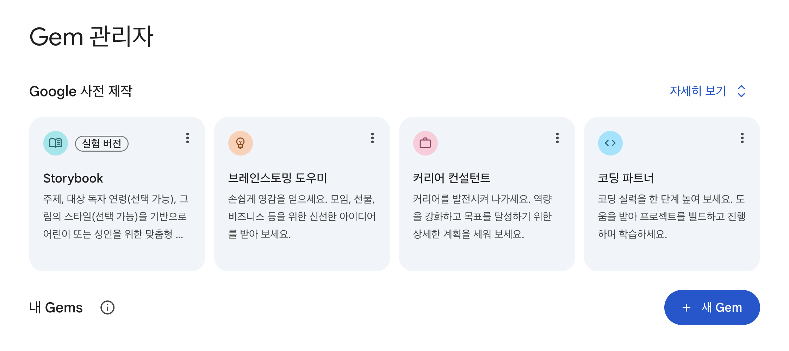
시연 1 — Gem Instructions 붙여넣기 (A→B→C)
Gem 편집 화면 Instructions 칸에 아래 4섹션을 붙여넣습니다. 시연에선 역할·형식(A) → 분류 기준(B) → 애매 처리(C) 순으로 더해가며, 매 단계 새 채팅으로 효과를 확인합니다.
## 역할
당신은 국민건강보험공단 이의신청 민원 분류 담당자입니다.
## 분류 기준 (5유형)
자격 변동 이의 · 보험료 산정 이의 · 급여 제한 이의 · 자격 확인 요청 · 기타
## 출력 형식
| 순번 | 민원 요약 | 분류 | 핵심 키워드 | 신뢰도 |
## 애매 처리 · 경계 사례
확신 없으면 신뢰도 '중/하' + 이유 · "보장구 지원 통보" → 급여 제한 이의
시연 1 — 분류·검수 채팅 프롬프트
Instructions를 채운 Gem 채팅에 분류할 파일 세션3_신규민원_10건.txt를 첨부하고 — 분류도 한 줄, 검수도 한 줄. A·B·C 매 단계 똑같이 씁니다.
[분류 실행] 세션3_신규민원_10건.txt 첨부 후 — A·B·C 매 단계 같은 한 줄
첨부한 신규 민원 10건을 분류해줘.
[검수·시각화] 후속 한 줄 — 같은 채팅에 이어서
위 분류 결과를 표로 정리하고,
분류별 건수를 히스토그램으로도 함께 그려줘.
시연 1 — A→B→C, 정확도가 오른다
같은 Gem·같은 데이터(민원 10건), 매 단계 새 채팅으로 다시 돌립니다. 바뀌는 건 Instructions뿐.
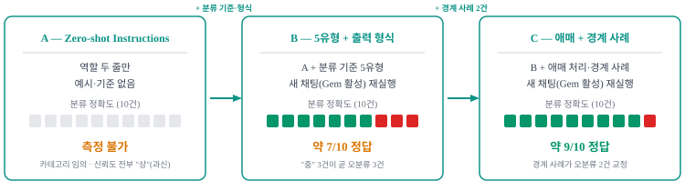
시연 1 — 결과를 사람이 검수한다
앞 장의 후속 한 줄을 입력하면 — 분류표와 유형별 건수가 채팅 응답 안에 텍스트로 정리돼 나옵니다. 신규 민원 10건의 실제 출력입니다.
| 분류 | 분포 | 건수 |
|---|---|---|
| 기타 | ■■■ | 3 |
| 급여 제한 이의 | ■■■ | 3 |
| 자격 확인 요청 | ■■ | 2 |
| 자격 변동 이의 | ■ | 1 |
| 보험료 산정 이의 | ■ | 1 |
세션4_신규민원_10건_분류결과.md 파일로 저장해 두면 — 그대로 §4 보고서 작성의 입력이 됩니다(배포 자료에 동봉).시연 2 — Instructions에서 Knowledge로
같은 Gem 구조, 채우는 자산이 다릅니다. 이번엔 인턴 옆에 1,000건짜리 자료실을 둡니다.
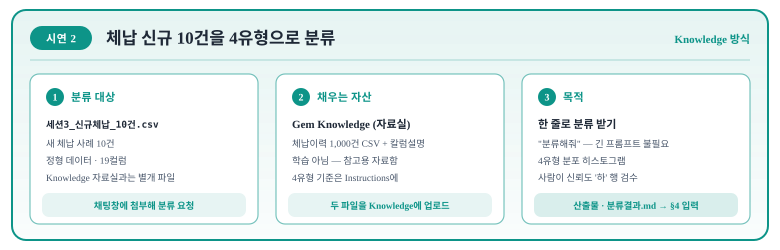
시연 2 — 자료실 1,000건 채우기
체납 분류용 Gem(체납_분류_도우미)을 새로 만들고, Knowledge 영역에 + 파일 추가로 두 파일을 올린 뒤 저장합니다.
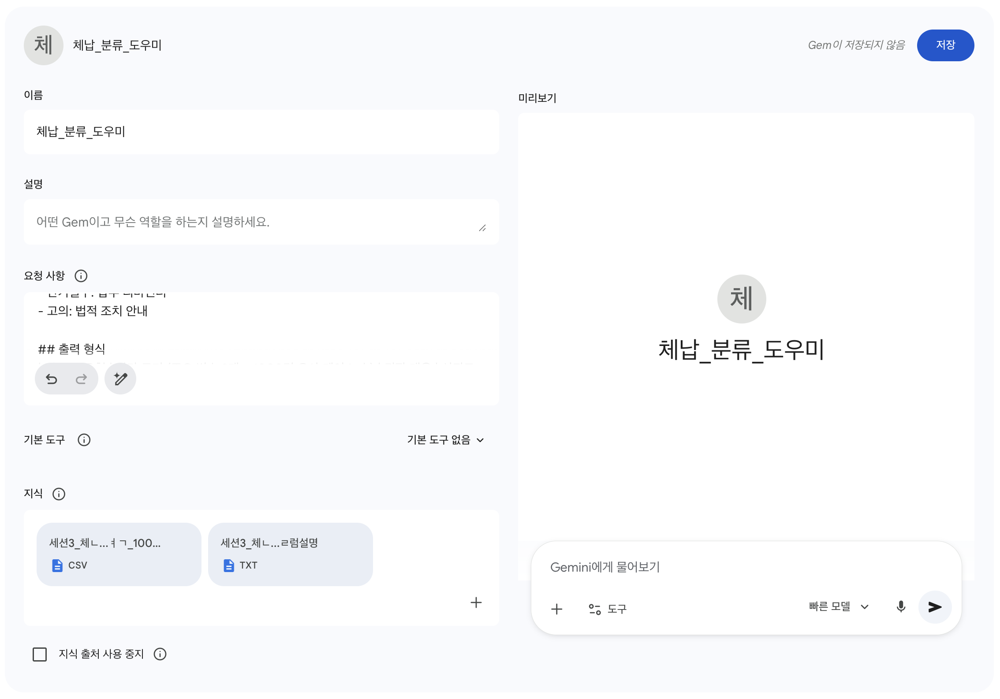
세션3_체납이력_1000건.csv(1,000건 자료실) + 세션3_체납이력_칼럼설명.txt(19컬럼 판단 기준). 저장을 눌러야 새 채팅에서 자료실이 작동합니다.시연 2 — Knowledge 분류 채팅 프롬프트
Instructions(매뉴얼)와 Knowledge(1,000건 자료실)가 다 갖춰지면 — 분류할 세션3_신규체납_10건.csv만 채팅에 첨부하면 한 줄이면 충분합니다.
[분류 실행] 세션3_신규체납_10건.csv 첨부 후 — Knowledge 자료실 참고
분류해줘.
[정리] 후속 한 줄 — 같은 채팅에 이어서
4유형 분포를 히스토그램으로 정리해줘.
시연 2 — 결과를 사람이 검수한다
앞 장의 두 프롬프트를 입력하면 — 10건 분류표에 이어 4유형 분포가 채팅 응답 안에 정리돼 나옵니다. 신규 체납 10건의 실제 출력입니다.
| 분류 | 분포 | 건수 |
|---|---|---|
| 상습 | ■■■ | 3 |
| 고의 | ■■■ | 3 |
| 경제곤란 | ■■■ | 3 |
| 단기실수 | ■ | 1 |
세션4_신규체납_10건_분류결과.md 파일로 저장해 두면 — 그대로 §4 실습의 입력이 됩니다(배포 자료에 동봉).실습 — 시연 1 Gem을 직접 써보기
§2 실습은 빈 채팅에서 매번 분류 체계를 새로 만들었습니다. §3 실습은 다릅니다 — 시연 1에서 만든 Gem(민원_분류_도우미)을 그대로 활용합니다. 라벨된 세션3_민원학습_100건.csv를 Knowledge에 올리고, 새 민원 10건을 본인 손으로 분류·검수합니다.
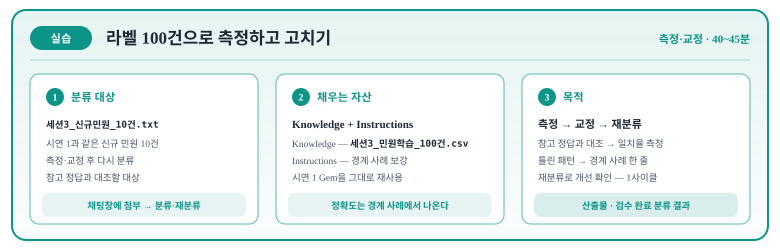
실습 — 복붙해서 시작하는 프롬프트
실습은 이 세 줄로 시작합니다 — 시연 1 Gem(민원_분류_도우미)을 활성한 새 채팅에 세션3_신규민원_10건.txt를 첨부하고.
[1단계] 세션3_신규민원_10건.txt 첨부 — Gem 활성 새 채팅에서
첨부한 신규 민원 10건을 분류해줘.
[2단계] 틀린 패턴을 Gem Instructions "## 경계 사례"에 한 줄 추가
- "[흔들린 표현]" → [정답 유형] ([틀렸던 유형]이 아닙니다)
[3단계] 검수 — 신뢰도 '중/하' 행을 참고 정답과 대조
틀린 행의 패턴은 2단계로 돌아가 경계 사례로 보강한다.
실습 — 측정하고 고치는 한 사이클
신규 10건 분류 → 참고 정답과 대조 → 틀린 패턴을 경계 사례로 → 재분류. §2 '반복 개선 사이클'과 모양은 같지만 — 고치는 대상이 일회성 채팅이 아니라 Gem Instructions입니다. 한 번 고치면 다음 주에도 고쳐진 채로.
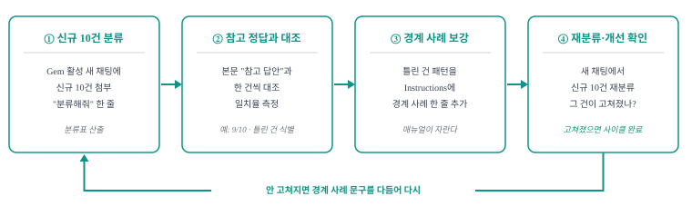
실습 — 정답 프롬프트
헷갈리는 건 늘 같은 두 패턴 — 보장구(→ 급여 제한 이의)와 외국인 자격 재확인(→ 자격 확인 요청). 아래 경계 사례 2줄을 Gem Instructions에 넣고 새 채팅에서 다시 분류하면 9/10이 나옵니다.
[Gem Instructions "## 경계 사례" 블록에 추가 — 정답 2줄]
- "보장구 지원 관련 급여 제한 통보" → 급여 제한 이의 (보장구는 '기타'가 아닙니다)
- "외국인 등록 변경에 따른 자격 재확인" → 자격 확인 요청 (자격 변동이 아닙니다)
[새 채팅(Gem 활성)에 세션3_신규민원_10건.txt 첨부 후]
첨부한 신규 민원 10건을 분류해줘.
자주 하는 실수 5가지
1차 결과를 받고 "다 됐다" 하기 전에 한 번 훑으세요.
| # | 증상 | 해결 |
|---|---|---|
| 1 | "분류해줘"만 입력 → 5유형이 Instructions에 없어 AI가 임의 유형 생성 | 표준 5유형을 Gem Instructions에 1회 입력 (매번 재입력도 사라짐) |
| 2 | Knowledge에 자료만 쌓으면 정확도가 오를 거라 기대 | 정확도는 Instructions 경계 사례에서 — Knowledge는 참고 자료실 |
| 3 | 1차 결과를 측정·검수 없이 그대로 사용 | 참고 정답과 대조 → '중·하' 건을 경계 사례로 → 재실행 |
| 4 | Instructions 고친 뒤 같은 채팅에서 이어 묻기 | 반드시 새 채팅(Gem 활성) 시작 |
| 5 | 새 채팅에서 Gem 미활성화 | 채팅 상단의 활성 Gem 이름 확인 |
§3 정리 — 분류를 인턴에게 맡기기
90분 동안 민원_분류_도우미 Gem 하나를 직접 만들었습니다. 그 과정에서 손에 넣은 것들을 한 화면에 정리합니다.
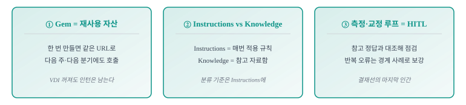
분류 결과를 의사결정 보고서로
Gemini Web으로 의사결정 리포트 집필
AX 3단계 - 의사결정 보고서 만들기
오전 §2 분석과 점심 후 §3 자동 분류를 지나, 이번 시간은 그 분류 결과를 결재용 의사결정 보고서로 끌어올리는 3단계입니다.
분류 결과를 의사결정 보고서로
§3에서 만든 분류표 한 장을, 새 채팅에서 한 부탁과 후속 한 줄로 결재 보고서로 풀어내는 시간입니다.
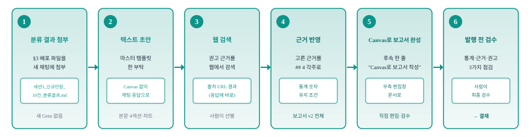
보고서 구성 — 본문 4섹션 + 보강 2가지
분류표를 보고서로 풀 때, 본문 4섹션과 통계 차트 초안을 먼저 받고, 웹 검색 외부 근거와 Canvas 편집창을 차례로 더합니다.
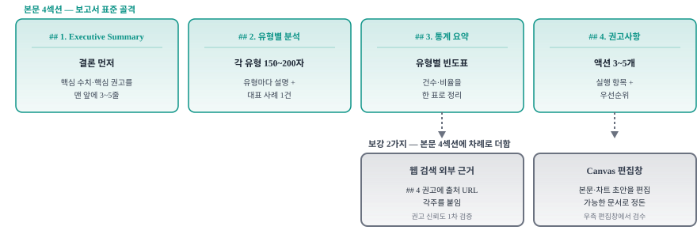
Canvas와 웹 검색 — 역할 분담
§4가 처음 쓰는 두 능력 — 웹 검색은 근거를 웹에서 찾아 정리하는 부탁, Canvas는 보고서가 우측 편집창으로 열리는 도구 메뉴 모드입니다.
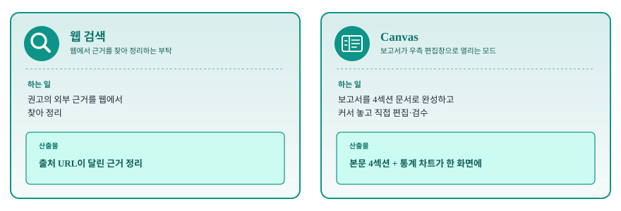
자연어 요청 마스터 템플릿 — §4의 핵심 자산
새 채팅 입력창에 그대로 붙여넣고 <유형> 한 곳만 바꿉니다. 이 한 부탁이 본문·차트 초안을 한 번에 만듭니다.
첨부한 <유형> 분류 결과를 의사결정 보고서 초안으로 만들어줘.
본문 4섹션 (마크다운):
## 1. Executive Summary (3~5줄)
## 2. 유형별 분석 (각 유형 150~200자 + 대표 사례)
## 3. 통계 요약 (유형별 빈도표 + 빈도·신뢰도 차트)
## 4. 권고사항 (근거 출처는 "담당자 확인 필요"로)
## 4에 반영(보고서 v2 전체 재출력) ③ Canvas로 보고서 완성 — 세 번의 후속 한 줄로 완성합니다.시연 — 민원 분류 결과를 의사결정 보고서로
시연에서 만들 의사결정 보고서가 무엇을·어떤 입력으로 다루는지 — 입력·쓰는 능력·산출을 먼저 봅니다.
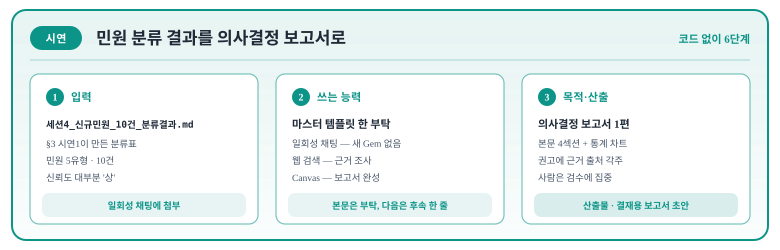
시연 1단계 — 입력 데이터 준비
배포 자료의 민원 분류 결과 파일(5유형·신뢰도 대부분 '상')을 일회성 채팅에 첨부합니다. 두 손동작이면 됩니다.
| 민원 5유형 | 건수 |
|---|---|
| 급여 제한 이의 | 3 |
| 자격 변동 이의 | 2 |
| 기타 | 2 |
| 자격 확인 요청 | 2 |
| 보험료 산정 이의 | 1 |
세션4_신규민원_10건_분류결과.md를 새 일회성 채팅에 드래그·+로 첨부. §3 분류 Gem이 아니라 일회성 채팅입니다.시연 2단계 — 텍스트 보고서 초안
마스터 템플릿을 붙여넣고 <유형>을 민원으로. 아직 Canvas는 켜지 않습니다 — 일반 채팅 응답으로 받습니다.
첨부한 민원 분류 결과를 의사결정 보고서 초안으로 만들어줘.
본문 4섹션 (마크다운):
## 1. Executive Summary (3~5줄, 결론·핵심 수치)
## 2. 유형별 분석 (5유형 각 150~200자 + 대표 사례)
## 3. 통계 요약 (유형별 빈도표 + 빈도·신뢰도 차트)
## 4. 권고사항 (근거 출처는 "담당자 확인 필요"로)
시연 3단계 — 웹 검색으로 권고 근거
초안의 ## 4. 권고사항은 "담당자 확인 필요" 상태. 후속 한 줄로 웹 검색을 부탁합니다.
위 권고사항의 근거가 될 관련 규정·통계 자료를
웹에서 찾아 출처와 함께 정리해줘.
국민건강보험공단·보건복지부·국가법령정보센터 자료 우선.
시연 4단계 — 근거를 골라 반영
웹 검색이 찾아온 자료 중 권고에 맞는 것만 사람이 고릅니다. 고른 근거를 후속 부탁에 직접 담아 ## 4 권고사항에 반영합니다.
웹 검색 결과에서 내가 고른 아래 근거 2건을
## 4 권고사항에 각주로 반영하고, 보고서 v2 전체를 다시 출력해줘.
통계 숫자는 원래 분류 결과와 일치시켜 유지해줘.
- 「국민건강보험법」 제74조 — 국외 3개월 이상 체류 시 보험료 면제 (국가법령정보센터)
- 「국민건강보험법」 제109조 — 외국인 당연가입·피부양자 6개월 요건 (국가법령정보센터)
시연 5단계 — Canvas로 보고서 완성
근거까지 반영된 보고서 v2가 완성됐습니다. 도구 메뉴에서 Canvas를 직접 켜고, 후속 한 줄로 A4 결재 문서를 만듭니다.
이제까지의 결과를 바탕으로 시각적으로 우수한
의사결정 보고서 작성해줘. (A4 규격)
| 채팅 텍스트 보고서 (1~4단계) | Canvas 편집창 문서 (5단계) | |
|---|---|---|
| 형태 | 채팅 응답에 흘러가는 텍스트 | 우측 편집창에 열린 문서 |
| 편집 | 안 됨 — 다시 부탁해야 함 | 커서 놓고 직접 고침 |
| 구조 | 스크롤로 섹션 찾기 | 4섹션이 문서로 정돈 |
시연 6단계 — 발행 전 검수 3가지
"보고서가 만들어졌나"가 아니라 "이대로 결재에 올려도 되나" 의 점검입니다.
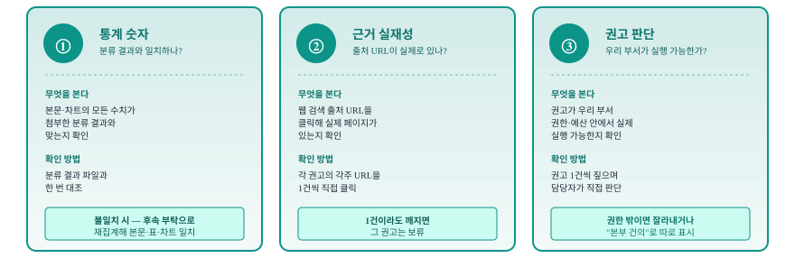
실습 — 체납 분류 결과로 직접 한 바퀴
이번엔 본인 차례. 실습에서 만들 의사결정 보고서가 무엇을·어떤 입력으로 다루는지 — 입력·쓰는 능력·산출을 먼저 봅니다.
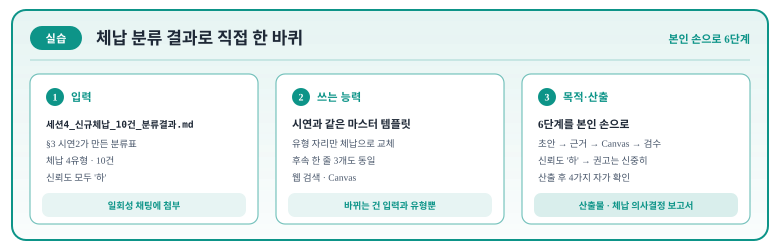
<유형> 한 곳뿐.실습 — 체납 요청 프롬프트
분류 결과 파일 세션4_신규체납_10건_분류결과.md를 새 일회성 채팅에 첨부 — 마스터 템플릿 그대로 <유형>만 체납으로. 체납은 4유형이라 "5유형" 박힌 민원용이 아닙니다.
첨부한 체납 분류 결과를 의사결정 보고서 초안으로 만들어줘.
본문 4섹션 (마크다운):
## 1. Executive Summary (3~5줄)
## 2. 유형별 분석 (각 유형 150~200자 + 대표 사례)
## 3. 통계 요약 (유형별 빈도표 + 빈도·신뢰도 차트)
## 4. 권고사항 (근거 출처는 "담당자 확인 필요"로)
실습 — 후속 한 줄 3개
텍스트 초안을 받은 뒤 — 시연 3·4·5단계와 같은 흐름으로 후속 한 줄 3개를 던집니다.
① 위 권고사항의 근거를 웹에서 찾아 출처와 정리해줘.
② 고른 근거만 ## 4에 각주 반영, 보고서 v2 전체 재출력(통계 숫자 일치).
③ 도구 메뉴에서 Canvas를 켜고, 이제까지의 결과를 시각적으로 우수한 A4 보고서로 작성해줘.
실습 — 산출 후 4가지 확인
시연과 같은 패턴. 빠진 게 있어도 처음부터 다시 만들 필요 없습니다.
| 체크 | 통과 기준 |
|---|---|
| ① 본문 4섹션 | ## 1. Executive Summary ~ ## 4. 권고사항 모두 존재 |
| ② 통계 차트 2장 | 빈도 차트 + 신뢰도 분포 차트가 ## 3 에 표시 |
| ③ 권고 근거 반영 | 고른 근거 출처가 ## 4 에 각주로, 통계 숫자가 분류 결과와 일치 |
| ④ Canvas로 보고서 완성 | 보고서 v2 전체가 우측 편집창 문서로 완성됐는가 |
부서별 적용 사례 — 같은 템플릿, 다른 데이터
민원·체납이 사례였을 뿐 — 분류 결과 + 보고서 부탁은 부서가 달라도 그대로 작동합니다.
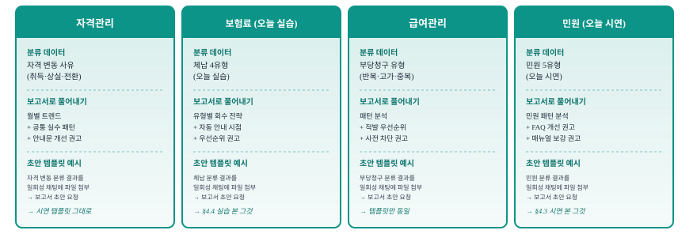
자주 하는 실수 5가지
보고서를 만들며 자주 나오는 5가지 — 분류 라벨·차트 숫자·본문 통계·근거 URL 404·실행 못 할 권고.
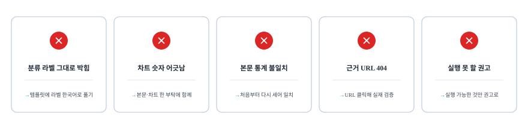
더 깊이 — NotebookLM · 결재 양식 변환
80분의 핵심은 보고서 초안 템플릿. 그 다음을 위한 두 갈래 선택지입니다.
| 갈래 | 언제 | 무엇 |
|---|---|---|
| NotebookLM | 부서 규정·매뉴얼·과거 결재 사례가 수십 개로 늘면 | 여러 문서를 올려 출처 달린 답변을 받는 자료실형 도구 |
| 양식 변환 | 발송·결재 직전 | Canvas 마크다운 → PDF·Word·한글(HWP). "이 보고서를 PDF로" 한 부탁 |
§4 정리 — 분류표를 결재 보고서로
80분 동안 손에 익힌 핵심 3가지를 한눈에.
| 가져갈 것 | 한 줄 정리 |
|---|---|
| 마스터 템플릿 한 부탁 | 첨부한 <유형> 분류 결과를 의사결정 보고서 초안으로 — 본문 4섹션 + 통계 차트를 한 번에 |
| 후속 한 줄 3개 | 웹 검색 근거 → 근거 반영 → Canvas로 보고서 완성 |
| 발행 전 검수 3가지 | 통계 숫자·근거 출처·권고 실행가능 — 사람이 마지막에 확인 |
AX 기획안 워크숍
우리 부서로 가져가기
AX 4단계 - 한 장짜리 기획안 만들기
§2 분석 · §3 자동 분류 · §4 보고서를 모두 지나, 이번 시간은 그 흐름을 자기 부서 AX 과제로 옮기는 마지막 4단계입니다.
한 장짜리 기획안 — 다섯 질문이 3요소로
무슨 업무에 · 지금 얼마나 부담인데 · 무엇이 어떻게 바뀌나 · 사람 검수는 어디에 두나 (HITL) · 그래서 얼마나 좋아지나 — 의사결정자의 다섯 질문이 AS-IS / TO-BE / 기대효과 3요소로 압축됩니다.
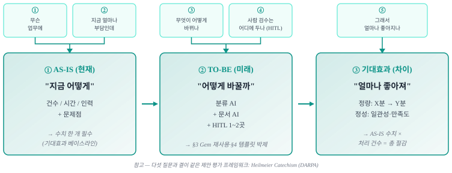
AS-IS 작성 가이드 — 4차원 중 1개는 수치로
5레인 swimlane으로 현재 흐름 + 4차원(건수·시간·인력·문제점) 중 1개는 반드시 수치로. ❌ "민원이 많아서 어렵다" → ✅ "월 800건 · 건당 30분 · 5명".
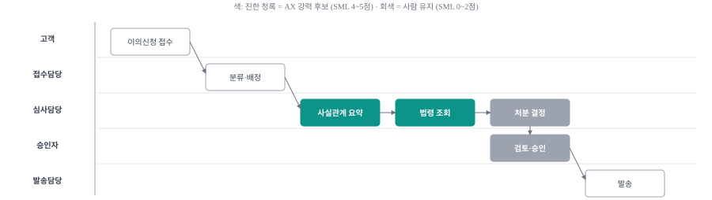
TO-BE 작성 가이드
분류 AI(§3에서 제작) · 문서 AI(§4 보고서 템플릿을 반복 업무용으로 박제) 분리 + HITL 게이트 — 사람이 어디서 검수하는지 그림으로.
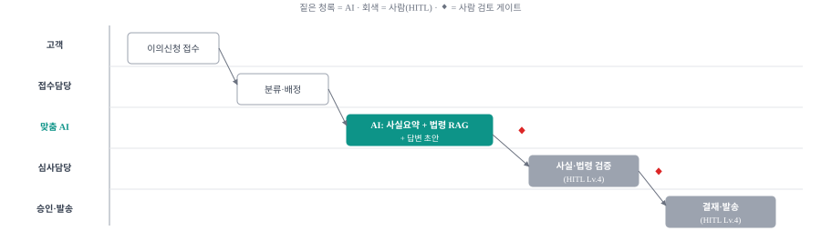
자동화 등급 — 공단은 Lv.4~5 권장
자동화 10단계 척도 — 셰리든·버플랭크(Sheridan·Verplank, 1978)가 'AI가 결정·실행을 사람에게서 얼마나 넘겨받나'를 1단계(사람이 전부)에서 10단계(AI가 전부)까지 나눈 고전 분류. 표는 이를 4묶음으로 압축 — 공공 의사결정은 Lv.4~5(승인 후 실행)가 안전선.
| Lv | 사람 역할 | AI 역할 | 공단 적용 |
|---|---|---|---|
| Lv.1~3 | 모두 결정·실행 | 옵션 제시·좁힘 | ⚪ AX 도입 전 단계 |
| Lv.4~5 | 승인 후 실행 | 추천 1개 제시 | ✅ 권장 — 외부 발송·법령 검증·처분 결정 |
| Lv.6 | 시간 내 거부 가능 | 자동 실행 (사람 대기) | 🟡 조건부 — 단순 내부 분류 |
| Lv.7~10 | 사후 알림 또는 무관 | 완전 자율 | ❌ OOTL 위험 — 권장 안 함 |
자가진단 4문항 — 우리 업무가 적합한가
입력출력 / 디지털 데이터 / 정답 비교 / 도덕·법령 비핵심 — 각 ✓ 1점. 3~4점 = AX 강력 후보, 1~2점 = 부분 적용, 0점 = 사람 유지.
| # | 질문 | 예 (이의신청 사실 요약) |
|---|---|---|
| 1 | 입력과 출력이 명확한가 | 민원 텍스트 → 5종 분류 |
| 2 | 풍부한 디지털 데이터가 있는가 | 기존 답변 100건+ |
| 3 | 결과를 즉시 비교할 정답이 있는가 | 작년 답변과 비교 |
| 4 | 도덕·법령 판단이 핵심이 아닌가 | 사실 요약 ✓ · 처분 결정 ✗ |
Gemini로 기획안 초안 잡기
손으로 쓰지 않습니다. §2에서 익힌 3요소 프롬프트로 Gemini에게 초안을 시키고, 사람은 입력과 검수만.
[맥락] 나는 건강보험공단 직원이고, 우리 부서 '○○ 업무'를
AI로 자동화하는 한 장짜리 기획안 초안이 필요하다.
[지시] 아래를 AS-IS·TO-BE·기대효과 3요소로 정리해줘.
· AS-IS(현재): ○○ — 처리량·시간·인력 중 수치 1개 포함
· TO-BE(개선): 유형 분류 AI + 문서 초안 AI로 처리,
위험한 1~2곳은 사람이 검수·승인 (AI는 초안까지, 결정은 사람)
· 기대효과: 'AS-IS 수치 × 처리 건수'로 절감량 환산
[형식] 3요소 각 4줄 이내, 끝에 5분 발표용 한 줄 요약
모범 기획안 — 이의신청 답변서
분류 AI(5유형 분류) + HITL ① → 문서 AI(답변서 RAG + 법령 인용) + HITL ② → 결재·발송 — 맞춤 AI 내부와 HITL 두 게이트가 한 그림에.
5분 발표 표준 구조
AS-IS 1분 · TO-BE 2분 · HITL+기대효과 1.5분 · 마무리 0.5분 — 5분 안에 끝.
| 시간 | 분량 | 내용 | 핵심 |
|---|---|---|---|
| 0:00~1:00 | 1분 | 과제명 + AS-IS | 수치 1개 필수 ("월 800건, 건당 30분") |
| 1:00~3:00 | 2분 | TO-BE 분류·문서 AI | 이름·입력·출력만. Instructions 풀텍스트 금지 |
| 3:00~4:30 | 1.5분 | HITL + 기대효과 | "법령·금액 검증" + "월 240시간 절감" |
| 4:30~5:00 | 0.5분 | 마무리 | "우리 부서에 적용하면 ~할 수 있을 것" |
§5 정리 — 도구 연습을 한 장 기획안으로
60분 동안 한 장 기획안을 쓰며 익힌 핵심 3가지를 한눈에.
| 가져갈 것 | 한 줄 정리 |
|---|---|
| 3요소 골격 | 의사결정자의 다섯 질문을 AS-IS · TO-BE · 기대효과 한 페이지로 압축 |
| AS-IS 수치 한 개 | 시간·건수·인력 중 하나만 숫자로 — 그래야 기대효과가 환산됩니다. 추정치 OK, 빈칸 NO |
| TO-BE = 두 AI + HITL | §3·§4에서 만든 분류 AI·문서 AI 재사용 + 검수 게이트 1~2곳(Lv.4~5) |
8시간 마무리
AI는 도구, AX는 전략
AI는 도구, AX는 전략
8시간 결론은 한 줄. 도구는 매년 바뀌어도 사고 틀(분석·자동 분류·보고서·기획)은 남는다.
책갈피 1/5 — §1 AX 4단계
분석(§2) → 자동 분류(§3) → 보고서(§4) → 기획(§5). 비정형 텍스트든 정형 엑셀이든 같은 4단계.
책갈피 2/5 — §2 프롬프트 3요소
맥락(누가 누구에게) + 지시(무엇을) + 형식(어떤 모양으로) — 셋만 갖춰도 품질의 70%.
책갈피 3/5 — §3 Gem 3요소
채팅 탭 + Gem Instructions·Knowledge(매뉴얼) + 자연어 부탁·채팅 내 차트(실행) — 일회성 채팅을 영구 자산으로.
책갈피 4/5 — §4 의사결정 보고서
본문 4섹션(차트 포함)은 한 부탁, 웹 검색 외부 근거·Canvas 편집창은 후속 한 줄.
책갈피 5/5 — §5 한 장 기획안
AS-IS(현재 부담) → TO-BE(미래 모습) → 기대효과(차이) — 부서 회의에 들고 갈 한 장.
도구가 바뀌어도 남는 사고 틀
① AX 4단계 · ② 분류→보고서 · ③ AI의 역할 — 8시간을 압축한 세 카드.
감사합니다
AI는 도구, AX는 전략 — 도구는 바뀌어도 사고 틀은 남는다